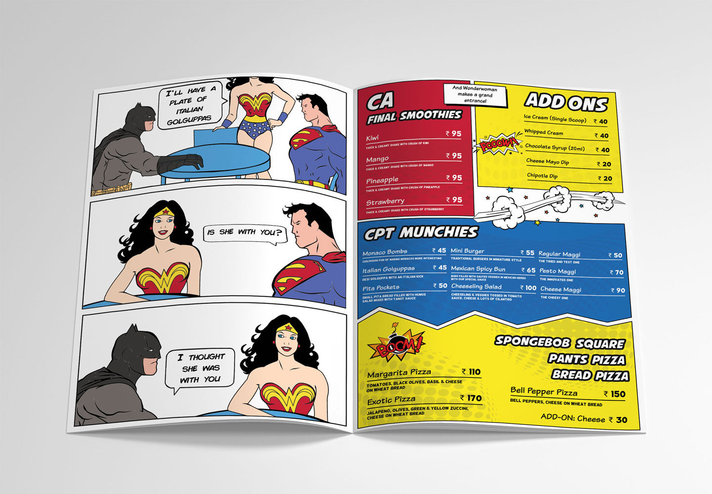
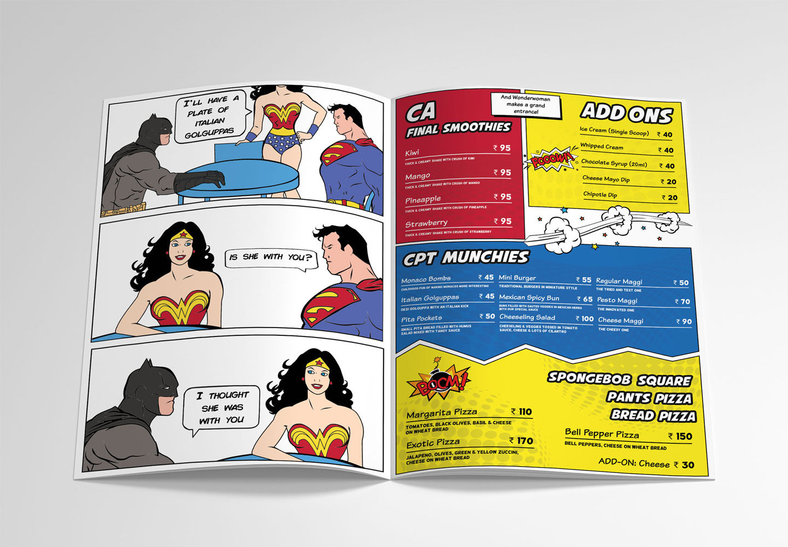

The CA Chef is a small cafe located in a Mumbai suburb. As the name suggests, the owner is a CA who decided to pursue is childhood dream of being a chef and opened his own cafe.
The cafe has vibrant colours and elements from the owner's childhood scattered all over the place. Maintaining this vibe, we were asked to create a super hero themed menu. We decided to go for a layout in which the left hand side would have an illustration (done by me) and the right hand side would have the menu items listed in a comic book style (done by Tushar).
I took inspiration from pop culture surrounding super heroes at that time and illustrated the the super heroes specified by the client using a Wacom Tablet. The illustrations were kept simple to delight reader and not distract them from the menu contents on the right hand side.
 



This project was selected as a semifinalist for the Adobe Design Achievement Awards in 2018.